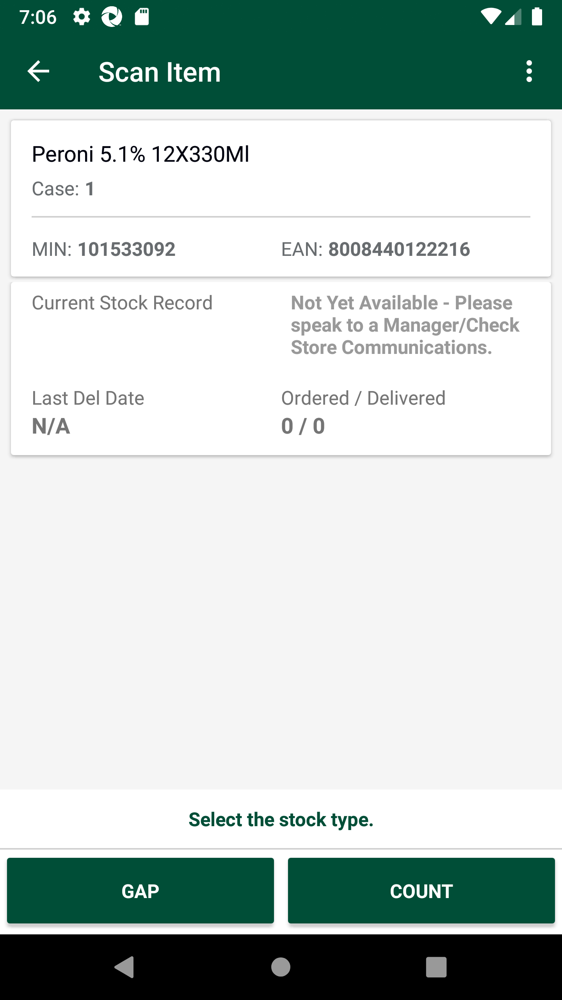
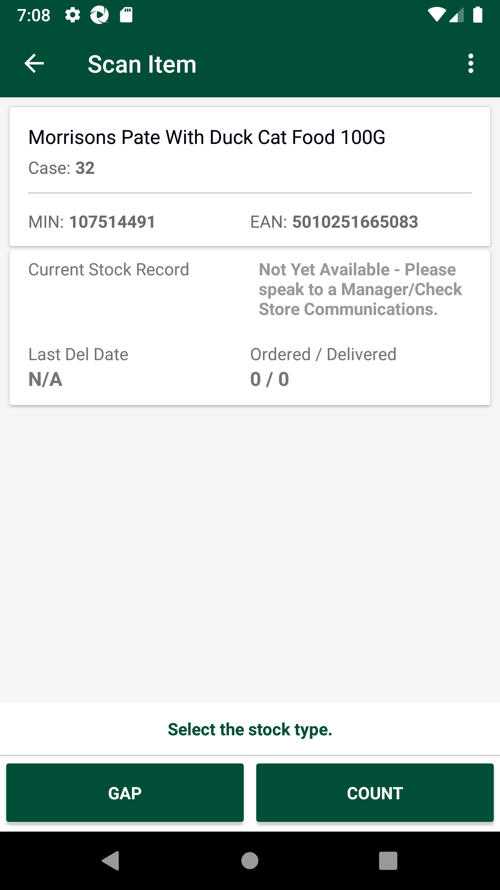
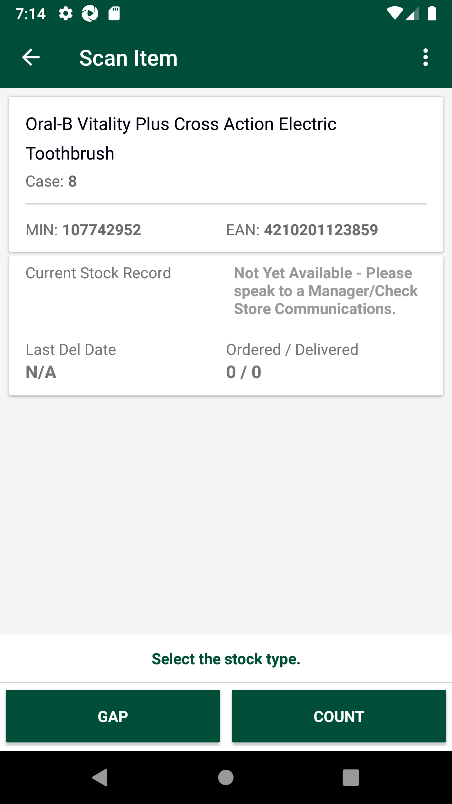
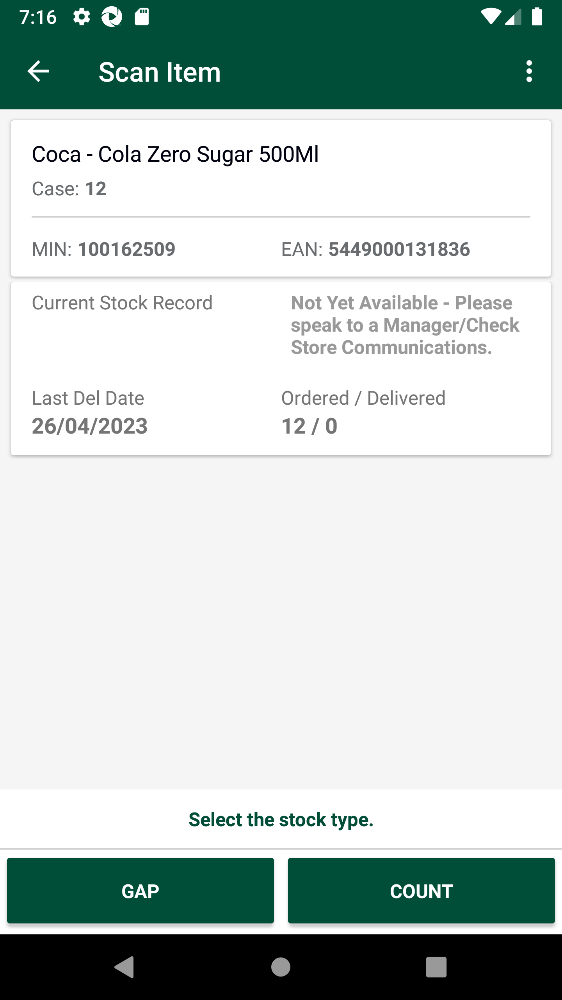
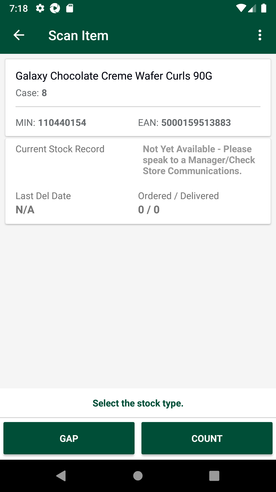
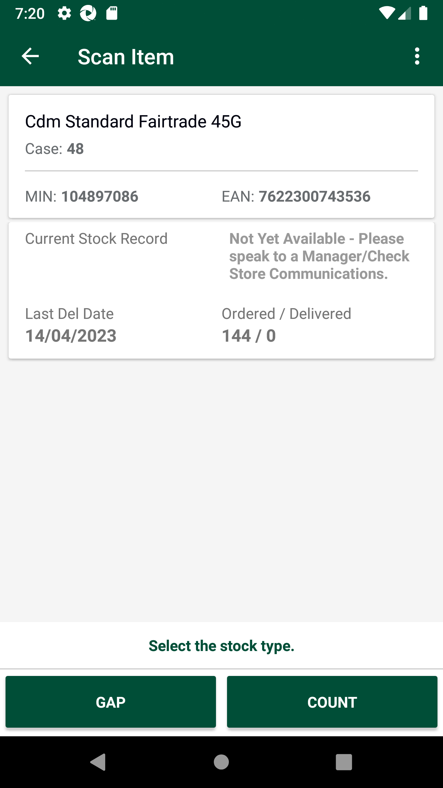
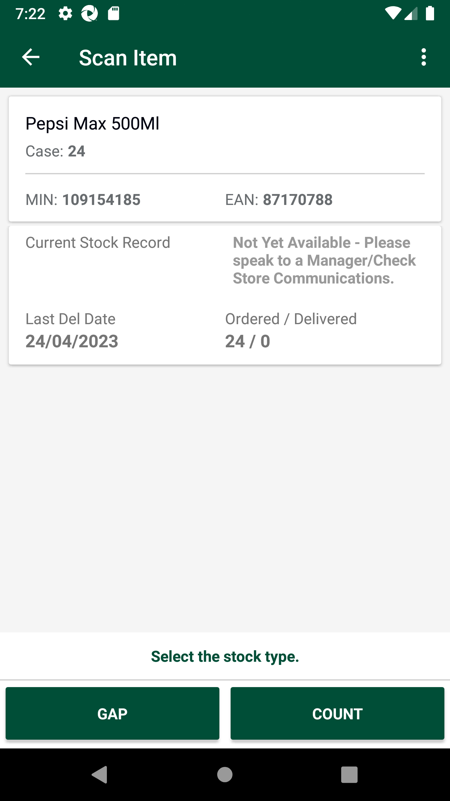
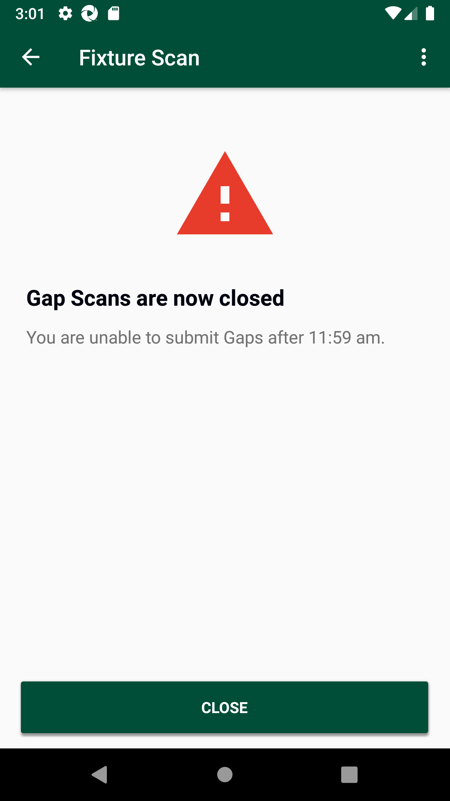
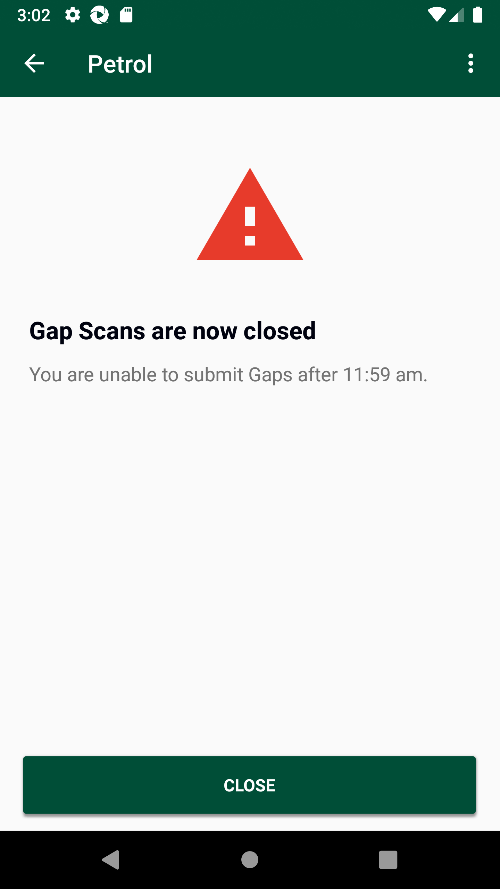

-
Verify AM GLH Functionality
19:31:33 PM / 04:05:134 Fail
Verify AM GLH Functionality
05.24.2023 19:31:33 05.24.2023 20:05:39 04:05:134 · #test-id=1@store_walk @regression @NewAm_glh1_701PassTO CHANGE THE DEVICE TIMINGS AS REQUIREDPassTO CHANGE THE DEVICE TIMINGS AS REQUIREDGiven I send the time "07" and mins "00" and meridiem "am" and current date in listThen I Change timeThen I Change datePassTO CHANGE THE DEVICE TIMINGS AS REQUIREDGiven I send the time "03" and mins "00" and meridiem "pm" and current date in listThen I Change timeThen I Change datePassTC-01_Verify UI of Gaps, Low, Highs is displayed as expected or notWhen I enter Username and Password for SMA Collegue userAnd I click on login button for SMAThen I click on 'stockMngmtText' on page 'HomePagePO_New'Then I click on "Shop Floor - Gap Scan"Then I click on Fixture ScanAnd I click on Back ButtonThen I click on OffShelfAnd I click on Back ButtonThen I click on PetrolAnd I click on Back ButtonThen I click on WareHouseAnd I click on Back ButtonThen I click on ReviewAnd I click on Back ButtonThen I click on SummaryAnd I click on Back ButtonPassDelete GLH Storewalk from ServicePassDelete GLH Storewalk from ServiceGiven Request is made to SMA app login service for collegue userThen Service should return details for SMA app Login ServiceAnd Get the generated Access Tocken for SMA app Login ServiceGiven Get request is made to Get storewalks service for current dateAnd Get Operation perform on service requestThen Verify Get storewalks service response for current dateThen Delete request is made to Delete GLH storewalk for store id "8"PassTC_02_16131_Scan product as Gap in fixture scan and verify records are present in warehouse. Delete product from fixture and verify records are not present in warehouse.PassTC_02_16131_Scan product as Gap in fixture scan and verify records are present in warehouse. Delete product from fixture and verify records are not present in warehouse.When I enter Username and Password for SMA Collegue userAnd I click on login button for SMAThen I click on 'stockMngmtText' on page 'HomePagePO_New'Then I click on "Shop Floor - Gap Scan"Then I click on Fixture ScanAnd I click on barcode entry ButtonThen Enter "107514491" numberAnd I click on GAP buttonAnd I choose the plan from popup if multiple records presentThen I verify the if it is GAPAnd I click on Back ButtonThen I click on WareHouseThen I verify my min is present in the "Household & Pet Food"And I click on Back ButtonGiven Request is made to SMA app login service for collegue userThen Service should return details for SMA app Login ServiceAnd Get the generated Access Tocken for SMA app Login ServiceGiven Get request is made to Get storewalks service for current dateAnd Get Operation perform on service requestThen I verify Product id "107514491" for Store id "8" and Walk type "GapsHighsLows" is present in Get storewalk serviceThen I verify Section status is "Available" in Get storewalk serviceThen I click on Fixture ScanThen I click on ViewList of GapsLowHighAnd I Delete products from fixtureAnd I click on Back ButtonAnd I click on Back ButtonThen I click on WareHouseThen I verify that record is deleted from WareHouseFailTC_03_16131_Scan product as High in fixture scan and verify records are present in warehouse. Delete product from fixture and verify records are not present in warehouse.FailTC_03_16131_Scan product as High in fixture scan and verify records are present in warehouse. Delete product from fixture and verify records are not present in warehouse.When I enter Username and Password for SMA Collegue userAnd I click on login button for SMAThen I click on 'stockMngmtText' on page 'HomePagePO_New'Then I click on "Shop Floor - Gap Scan"Then I click on Fixture ScanAnd I click on barcode entry ButtonThen Enter "100162509" numberAnd I click on High buttoncom.morrisons.common.action.Hook.afterScenario(io.cucumber.java.Scenario)And I enter quantity "2" for fixture and warehouseStep skippedAnd I choose the plan from popup if multiple records presentStep skippedThen I verify the if it is HIGHStep skippedAnd I click on Back ButtonStep skippedThen I click on WareHouseStep skippedThen I verify my min is present in the "Grocery (Impulse)"Step skippedGiven Request is made to SMA app login service for collegue userStep skippedThen Service should return details for SMA app Login ServiceStep skippedAnd Get the generated Access Tocken for SMA app Login ServiceStep skippedGiven Get request is made to Get storewalks service for current dateStep skippedAnd Get Operation perform on service requestStep skippedThen I verify Product id "100162509" for Store id "8" and Walk type "GapsHighsLows" is present in Get storewalk serviceStep skippedThen I verify Capture details in storewalk for Product id "100162509" is Capture type "High" Capture status "Incomplete" and Capture quantity "2"Step skippedThen I verify Section status is "Available" in Get storewalk serviceStep skippedAnd I click on Back ButtonStep skippedThen I click on Fixture ScanStep skippedThen I click on ViewList of GapsLowHighStep skippedAnd I Delete products from fixtureStep skippedAnd I click on Back ButtonStep skippedAnd I click on Back ButtonStep skippedThen I click on WareHouseStep skippedThen I verify that record is deleted from WareHouseStep skippedFailTC_04_16131_Scan product as Low in fixture scan and verify records are present in warehouse. Delete product from fixture and verify records are not present in warehouse.FailTC_04_16131_Scan product as Low in fixture scan and verify records are present in warehouse. Delete product from fixture and verify records are not present in warehouse.When I enter Username and Password for SMA Collegue userAnd I click on login button for SMAThen I click on 'stockMngmtText' on page 'HomePagePO_New'Then I click on "Shop Floor - Gap Scan"Then I click on Fixture ScanAnd I click on barcode entry ButtonThen Enter "101533092" numberAnd I click on Low buttoncom.morrisons.common.action.Hook.afterScenario(io.cucumber.java.Scenario)
And I Enter the Low quantity "2"Step skippedAnd I choose the plan from popup if multiple records presentStep skippedThen I verify the if it is LOWStep skippedAnd I click on Back ButtonStep skippedThen I click on WareHouseStep skippedThen I verify my min is present in the "Alcohol"Step skippedGiven Request is made to SMA app login service for collegue userStep skippedThen Service should return details for SMA app Login ServiceStep skippedAnd Get the generated Access Tocken for SMA app Login ServiceStep skippedGiven Get request is made to Get storewalks service for current dateStep skippedAnd Get Operation perform on service requestStep skippedThen I verify Product id "101533092" for Store id "8" and Walk type "GapsHighsLows" is present in Get storewalk serviceStep skippedThen I verify Capture details in storewalk for Product id "101533092" is Capture type "Low" Capture status "Incomplete" and Capture quantity "2"Step skippedThen I verify Section status is "Available" in Get storewalk serviceStep skippedAnd I click on Back ButtonStep skippedThen I click on Fixture ScanStep skippedThen I click on ViewList of GapsLowHighStep skippedAnd I Delete products from fixtureStep skippedAnd I click on Back ButtonStep skippedAnd I click on Back ButtonStep skippedThen I click on WareHouseStep skippedThen I verify that record is deleted from WareHouseStep skippedFailTC_05_16132_Scan a product as LOW. Update variance count in warehouse. Verify variance count is updated.FailTC_05_16132_Scan a product as LOW. Update variance count in warehouse. Verify variance count is updated.When I enter Username and Password for SMA Collegue userAnd I click on login button for SMAGiven Request is made to SMA app login service for collegue userThen Service should return details for SMA app Login ServiceAnd Get the generated Access Tocken for SMA app Login ServiceGiven Get request is made to Get storewalks service for current dateAnd Get Operation perform on service requestThen Verify Get storewalks service response for current dateThen Delete request is made to Delete GLH storewalk for store id "8"Then I click on 'stockMngmtText' on page 'HomePagePO_New'Then I click on "Shop Floor - Gap Scan"Then I click on Fixture ScanAnd I click on barcode entry ButtonThen Enter "107514491" numberThen I capture StockRecord ValueAnd I click on Low buttoncom.morrisons.common.action.Hook.afterScenario(io.cucumber.java.Scenario)And I Enter the Low quantity "2"Step skippedAnd I choose the plan from popup if multiple records presentStep skippedAnd I will capture the product name from view listStep skippedThen I verify the product MIN value "107514491" from view listStep skippedThen I verify the if it is LOWStep skippedAnd I click on Back ButtonStep skippedThen I click on WareHouseStep skippedThen I verify my min is present in the "Household & Pet Food" or notStep skippedThen I verify the if Low is displayed in warehouseStep skippedThen I Verify that Barcode matches with the input "107514491" barcodeStep skippedAnd I get the variance count previous valueStep skippedThen I verify the Item DescriptionStep skippedThen I enter Qty in Warehouse "3"Step skippedAnd I verify the variance count after adding quantity "3" valueStep skippedAnd I click on Back ButtonStep skippedGiven Request is made to SMA app login service for collegue userStep skippedThen Service should return details for SMA app Login ServiceStep skippedAnd Get the generated Access Tocken for SMA app Login ServiceStep skippedGiven Get request is made to Get storewalks service for current dateStep skippedAnd Get Operation perform on service requestStep skippedThen I verify Product id "107514491" for Store id "8" and Walk type "GapsHighsLows" is present in Get storewalk serviceStep skippedThen I verify Capture details in storewalk for Product id "107514491" is Capture type "Low" Capture status "Incomplete" and Capture quantity "2"Step skippedThen I verify Capture details in storewalk for Product id "107514491" is Capture type "Actual" Capture status "Incomplete" and Capture quantity "3"Step skippedThen I verify Section status is "Available" in Get storewalk serviceStep skippedAnd I click on Back ButtonStep skippedThen I click on Fixture ScanStep skippedThen I click on ViewList of GapsLowHighStep skippedAnd I Delete products from fixtureStep skippedFailTC_06_16133_Verify if product is marked as HIGH, then in view list two entries should be present.FailTC_06_16133_Verify if product is marked as HIGH, then in view list two entries should be present.When I enter Username and Password for SMA Collegue userAnd I click on login button for SMAGiven Request is made to SMA app login service for collegue userThen Service should return details for SMA app Login ServiceAnd Get the generated Access Tocken for SMA app Login ServiceGiven Get request is made to Get storewalks service for current dateAnd Get Operation perform on service requestThen Verify Get storewalks service response for current dateThen Delete request is made to Delete GLH storewalk for store id "8"Then I click on 'stockMngmtText' on page 'HomePagePO_New'Then I click on "Shop Floor - Gap Scan"Then I click on Fixture ScanAnd I click on barcode entry ButtonThen Enter "107514491" numberAnd I click on High buttoncom.morrisons.common.action.Hook.afterScenario(io.cucumber.java.Scenario)
And I enter quantity "2" for fixture and warehouseStep skippedAnd I choose the plan from popup if multiple records presentStep skippedThen I verify the if it is HIGHStep skippedAnd I will capture the product name from view listStep skippedThen I verify the product MIN value "107514491" from view listStep skippedAnd I click on ViewList to verify that two entries are present for MIN "107514491"Step skippedAnd I Delete products from fixtureStep skippedPassTC_07_Verify that GAP is properly generated in Fixture Scan and view list GAP status, Product name and Product min value should displayed.To verify Last capture section displaying correct information when the last capture has been taken in AM GLH and scanned as GAP.PassTC_07_Verify that GAP is properly generated in Fixture Scan and view list GAP status, Product name and Product min value should displayed.To verify Last capture section displaying correct information when the last capture has been taken in AM GLH and scanned as GAP.When I enter Username and Password for SMA Collegue userAnd I click on login button for SMAGiven Request is made to SMA app login service for collegue userThen Service should return details for SMA app Login ServiceAnd Get the generated Access Tocken for SMA app Login ServiceGiven Get request is made to Get storewalks service for current dateAnd Get Operation perform on service requestThen Verify Get storewalks service response for current dateThen Delete request is made to Delete GLH storewalk for store id "8"Then I click on 'stockMngmtText' on page 'HomePagePO_New'Then I click on "Shop Floor - Gap Scan"Then I click on Fixture ScanAnd I click on barcode entry ButtonThen Enter "110440154" numberAnd I click on GAP buttonAnd I choose the plan from popup if multiple records presentAnd I will capture the product name from view listThen I verify the product MIN value "110440154" from view listThen I verify the if it is GAPAnd I click on Back ButtonThen I click on WareHouseThen I verify my min is present in the "Grocery (Impulse)"And I click on Back ButtonThen I click on hotKeyAnd I select StockInformation from the Hotkey MenuAnd I click on barcode entry ButtonThen Enter "110440154" numberAnd I verify Last Capture Type is "AM Gap"And I verify Date and User details for Last captureAnd I verify Counted column and counted quantity "0" for last capture are presentAnd I click on Back ButtonAnd I click on Back ButtonFailTC_08_Verify that LOW is properly generated in Fixture Scan and view list LOW status, Product name and Product min value should displayed.To verify Last capture section displaying correct information when the last capture has been taken in Low and scanned as LOW.FailTC_08_Verify that LOW is properly generated in Fixture Scan and view list LOW status, Product name and Product min value should displayed.To verify Last capture section displaying correct information when the last capture has been taken in Low and scanned as LOW.When I enter Username and Password for SMA Collegue userAnd I click on login button for SMAThen I click on 'stockMngmtText' on page 'HomePagePO_New'Then I click on "Shop Floor - Gap Scan"Then I click on Fixture ScanAnd I click on barcode entry ButtonThen Enter "109154185" numberAnd I click on Low buttoncom.morrisons.common.action.Hook.afterScenario(io.cucumber.java.Scenario)And I Enter the Low quantity "2"Step skippedAnd I choose the plan from popup if multiple records presentStep skippedAnd I will capture the product name from view listStep skippedThen I verify the product MIN value "109154185" from view listStep skippedThen I verify the if it is LOWStep skippedAnd I verfify "109154185" item is presentStep skippedAnd I click on Back ButtonStep skippedThen I click on hotKeyStep skippedAnd I select StockInformation from the Hotkey MenuStep skippedAnd I click on barcode entry ButtonStep skippedThen Enter "109154185" numberStep skippedAnd I verify Last Capture Type is "Low"Step skippedAnd I verify Date and User details for Last captureStep skippedAnd I verify Counted column and counted quantity "2" for last capture are presentStep skippedAnd I click on Back ButtonStep skippedAnd I click on Back ButtonStep skippedFailTC_08_Verify that LOW is properly generated in Fixture Scan and view list LOW status, Product name and Product min value should displayed.To verify Last capture section displaying correct information when the last capture has been taken in Low and scanned as LOW.When I enter Username and Password for SMA Collegue userAnd I click on login button for SMAThen I click on 'stockMngmtText' on page 'HomePagePO_New'Then I click on "Shop Floor - Gap Scan"Then I click on Fixture ScanAnd I click on barcode entry ButtonThen Enter "100162509" numberAnd I click on Low buttoncom.morrisons.common.action.Hook.afterScenario(io.cucumber.java.Scenario)And I Enter the Low quantity "4"Step skippedAnd I choose the plan from popup if multiple records presentStep skippedAnd I will capture the product name from view listStep skippedThen I verify the product MIN value "100162509" from view listStep skippedThen I verify the if it is LOWStep skippedAnd I verfify "100162509" item is presentStep skippedAnd I click on Back ButtonStep skippedThen I click on hotKeyStep skippedAnd I select StockInformation from the Hotkey MenuStep skippedAnd I click on barcode entry ButtonStep skippedThen Enter "100162509" numberStep skippedAnd I verify Last Capture Type is "Low"Step skippedAnd I verify Date and User details for Last captureStep skippedAnd I verify Counted column and counted quantity "4" for last capture are presentStep skippedAnd I click on Back ButtonStep skippedAnd I click on Back ButtonStep skippedFailTC_08_Verify that LOW is properly generated in Fixture Scan and view list LOW status, Product name and Product min value should displayed.To verify Last capture section displaying correct information when the last capture has been taken in Low and scanned as LOW.When I enter Username and Password for SMA Collegue userAnd I click on login button for SMAThen I click on 'stockMngmtText' on page 'HomePagePO_New'Then I click on "Shop Floor - Gap Scan"Then I click on Fixture ScanAnd I click on barcode entry ButtonThen Enter "107742952" numberAnd I click on Low buttoncom.morrisons.common.action.Hook.afterScenario(io.cucumber.java.Scenario)
And I Enter the Low quantity "4"Step skippedAnd I choose the plan from popup if multiple records presentStep skippedAnd I will capture the product name from view listStep skippedThen I verify the product MIN value "107742952" from view listStep skippedThen I verify the if it is LOWStep skippedAnd I verfify "107742952" item is presentStep skippedAnd I click on Back ButtonStep skippedThen I click on hotKeyStep skippedAnd I select StockInformation from the Hotkey MenuStep skippedAnd I click on barcode entry ButtonStep skippedThen Enter "107742952" numberStep skippedAnd I verify Last Capture Type is "Low"Step skippedAnd I verify Date and User details for Last captureStep skippedAnd I verify Counted column and counted quantity "4" for last capture are presentStep skippedAnd I click on Back ButtonStep skippedAnd I click on Back ButtonStep skippedFailTC_09_Verify that High is properly generated in Fixture Scan and view list HIGH status, Product name and Product min value should displayed. To verify Last capture section displaying correct information when the last capture has been taken in High and scanned as HIGH.FailTC_09_Verify that High is properly generated in Fixture Scan and view list HIGH status, Product name and Product min value should displayed. To verify Last capture section displaying correct information when the last capture has been taken in High and scanned as HIGH.Given Request is made to SMA app login service for collegue userThen Service should return details for SMA app Login ServiceAnd Get the generated Access Tocken for SMA app Login ServiceGiven Get request is made to Get storewalks service for current dateAnd Get Operation perform on service requestThen Verify Get storewalks service response for current dateThen Delete request is made to Delete GLH storewalk for store id "8"When I enter Username and Password for SMA Collegue userAnd I click on login button for SMAThen I click on 'stockMngmtText' on page 'HomePagePO_New'Then I click on "Shop Floor - Gap Scan"Then I click on Fixture ScanAnd I click on barcode entry ButtonThen Enter "100162509" numberAnd I click on High buttoncom.morrisons.common.action.Hook.afterScenario(io.cucumber.java.Scenario)
And I enter quantity "2" for fixture and warehouseStep skippedAnd I choose the plan from popup if multiple records presentStep skippedAnd I click on OKStep skippedAnd I will capture the product name from view listStep skippedThen I verify the product MIN value "100162509" from view listStep skippedThen I verify the if it is HIGHStep skippedAnd I click on Back ButtonStep skippedThen I click on hotKeyStep skippedAnd I select StockInformation from the Hotkey MenuStep skippedAnd I click on barcode entry ButtonStep skippedThen Enter "100162509" numberStep skippedAnd I verify Last Capture Type is "High"Step skippedAnd I verify Date and User details for Last captureStep skippedAnd I verify Counted column and counted quantity "4" for last capture are presentStep skippedAnd I click on Back ButtonStep skippedAnd I click on Back ButtonStep skippedFailTC_09_Verify that High is properly generated in Fixture Scan and view list HIGH status, Product name and Product min value should displayed. To verify Last capture section displaying correct information when the last capture has been taken in High and scanned as HIGH.Given Request is made to SMA app login service for collegue userThen Service should return details for SMA app Login ServiceAnd Get the generated Access Tocken for SMA app Login ServiceGiven Get request is made to Get storewalks service for current dateAnd Get Operation perform on service requestThen Verify Get storewalks service response for current dateThen Delete request is made to Delete GLH storewalk for store id "8"When I enter Username and Password for SMA Collegue userAnd I click on login button for SMAThen I click on 'stockMngmtText' on page 'HomePagePO_New'Then I click on "Shop Floor - Gap Scan"Then I click on Fixture ScanAnd I click on barcode entry ButtonThen Enter "110440154" numberAnd I click on High buttoncom.morrisons.common.action.Hook.afterScenario(io.cucumber.java.Scenario)
And I enter quantity "4" for fixture and warehouseStep skippedAnd I choose the plan from popup if multiple records presentStep skippedAnd I click on OKStep skippedAnd I will capture the product name from view listStep skippedThen I verify the product MIN value "110440154" from view listStep skippedThen I verify the if it is HIGHStep skippedAnd I click on Back ButtonStep skippedThen I click on hotKeyStep skippedAnd I select StockInformation from the Hotkey MenuStep skippedAnd I click on barcode entry ButtonStep skippedThen Enter "110440154" numberStep skippedAnd I verify Last Capture Type is "High"Step skippedAnd I verify Date and User details for Last captureStep skippedAnd I verify Counted column and counted quantity "8" for last capture are presentStep skippedAnd I click on Back ButtonStep skippedAnd I click on Back ButtonStep skippedFailFirst scan in GLH as LOW then as HIGH/GAP , captured should override with latest Capture details in Stock information screenFailFirst scan in GLH as LOW then as HIGH/GAP , captured should override with latest Capture details in Stock information screenWhen I enter Username and Password for SMA Collegue userAnd I click on login button for SMAThen I click on 'stockMngmtText' on page 'HomePagePO_New'Then I click on "Shop Floor - Gap Scan"Then I click on Fixture ScanAnd I click on barcode entry ButtonThen Enter "109154185" numberAnd I click on Low buttoncom.morrisons.common.action.Hook.afterScenario(io.cucumber.java.Scenario)And I Enter the Low quantity "2"Step skippedAnd I choose the plan from popup if multiple records presentStep skippedAnd I will capture the product name from view listStep skippedThen I verify the product MIN value "109154185" from view listStep skippedThen I verify the if it is LOWStep skippedAnd I verfify "109154185" item is presentStep skippedAnd I click on Back ButtonStep skippedThen I click on hotKeyStep skippedAnd I select StockInformation from the Hotkey MenuStep skippedAnd I click on barcode entry ButtonStep skippedThen Enter "109154185" numberStep skippedAnd I verify Last Capture Type is "Low"Step skippedAnd I verify Date and User details for Last captureStep skippedAnd I verify Counted column and counted quantity "2" for last capture are presentStep skippedAnd I click on Back ButtonStep skippedAnd I click on Back ButtonStep skippedThen I click on Fixture ScanStep skippedAnd I click on barcode entry ButtonStep skippedThen Enter "109154185" numberStep skippedAnd I click on GAP buttonStep skippedAnd I choose the plan from popup if multiple records presentStep skippedAnd I will capture the product name from view listStep skippedThen I verify the product MIN value "109154185" from view listStep skippedThen I verify the if it is GAPStep skippedAnd I click on Back ButtonStep skippedThen I click on hotKeyStep skippedAnd I select StockInformation from the Hotkey MenuStep skippedAnd I click on barcode entry ButtonStep skippedThen Enter "109154185" numberStep skippedAnd I verify Last Capture Type is "AM Gap"Step skippedAnd I verify Date and User details for Last captureStep skippedAnd I verify Counted column and counted quantity "2" for last capture are presentStep skippedAnd I click on Back ButtonStep skippedFailTC_10_Verify End to End, User is abel to review the product which is available in multiple locations.FailTC_10_Verify End to End, User is abel to review the product which is available in multiple locations.When I enter Username and Password for SMA Collegue userAnd I click on login button for SMAGiven Request is made to SMA app login service for collegue userThen Service should return details for SMA app Login ServiceAnd Get the generated Access Tocken for SMA app Login ServiceGiven Get request is made to Get storewalks service for current dateAnd Get Operation perform on service requestThen Verify Get storewalks service response for current dateThen Delete request is made to Delete GLH storewalk for store id "8"Then I click on 'stockMngmtText' on page 'HomePagePO_New'Then I click on "Shop Floor - Gap Scan"Then I click on Fixture ScanAnd I click on barcode entry ButtonThen Enter "104897086" numberAnd I verify the "104897086" in Scan ItemAnd I click on Low buttoncom.morrisons.common.action.Hook.afterScenario(io.cucumber.java.Scenario)
And I Enter the Low quantity "15"Step skippedAnd I choose the plan from popup if multiple records presentStep skippedAnd I will capture the product name from view listStep skippedThen I verify the if it is LOWStep skippedAnd I click on Back ButtonStep skippedGiven Request is made to SMA app login service for collegue userStep skippedThen Service should return details for SMA app Login ServiceStep skippedAnd Get the generated Access Tocken for SMA app Login ServiceStep skippedGiven Get request is made to Get storewalks service for current dateStep skippedAnd Get Operation perform on service requestStep skippedThen I verify Product id "104897086" for Store id "8" and Walk type "GapsHighsLows" is present in Get storewalk serviceStep skippedThen I verify Capture details in storewalk for Product id "104897086" is Capture type "Low" Capture status "Incomplete" and Capture quantity "15"Step skippedThen I verify Section status is "Available" in Get storewalk serviceStep skippedGiven a Store ID "" and type "Kiosk Counter Sweets" is included in GLH request Step skippedThen I click on OffShelfStep skippedAnd I completed offshelf section for all the departmentStep skippedAnd I click on Back ButtonStep skippedThen I click on PetrolStep skippedAnd I completed petrol section for all the departmentStep skippedAnd I click on Back ButtonStep skippedGiven a Store ID "" and type "Petrol Chilled Fresh" is included in GLH request Step skippedThen I click on WareHouseStep skippedThen I verify my min is present in the "Grocery (Impulse)"Step skippedAnd I click on Back ButtonStep skippedThen I click on ReviewStep skippedThen I select the "Grocery (Impulse)" and verify the status as PendingStep skippedAnd I click on Back ButtonStep skippedThen I click on WareHouseStep skippedThen I verify my min is present in the "Grocery (Impulse)" or notStep skippedThen I verify the if Low is displayed in warehouseStep skippedThen I will enter the required quantity and click on confirmStep skippedThen I click on Confirm Area CountStep skippedThen I click on Confirm message after verifying itStep skippedAnd I click on Back ButtonStep skippedThen I click on ReviewStep skippedThen I verify my min is present in the "Grocery (Impulse)"Step skippedThen I select the "Grocery (Impulse)" and verify the status as ReviewReadyStep skippedAnd I click on "Chocolate & Confectionery" under the departmentStep skippedAnd I click on the "104897086" to update the countStep skippedThen I select "Warehouse" to updateStep skippedAnd I update the "15"Step skippedThen I click on the Confirm ButtonStep skippedGiven Get request is made to Get storewalks service for current dateStep skippedAnd Get Operation perform on service requestStep skippedThen I verify Product id "104897086" for Store id "8" and Walk type "GapsHighsLows" is present in Get storewalk serviceStep skippedThen I verify Capture details in storewalk for Product id "104897086" is Capture type "Low" Capture status "Complete" and Capture quantity "15"Step skippedThen I verify Section status is "CountComplete" in Get storewalk serviceStep skippedFailTC_11_Verify End to End, Verify Summary screenFailTC_11_Verify End to End, Verify Summary screenWhen I enter Username and Password for SMA Collegue userAnd I click on login button for SMAGiven Request is made to SMA app login service for collegue userThen Service should return details for SMA app Login ServiceAnd Get the generated Access Tocken for SMA app Login ServiceGiven Get request is made to Get storewalks service for current dateAnd Get Operation perform on service requestThen Verify Get storewalks service response for current dateThen Delete request is made to Delete GLH storewalk for store id "8"Then I click on 'stockMngmtText' on page 'HomePagePO_New'Then I click on "Shop Floor - Gap Scan"Then I click on Fixture ScanAnd I click on barcode entry ButtonThen Enter "109154185" numberAnd I click on Low buttoncom.morrisons.common.action.Hook.afterScenario(io.cucumber.java.Scenario)
And I Enter the Low quantity "15"Step skippedAnd I choose the plan from popup if multiple records presentStep skippedAnd I will capture the product name from view listStep skippedThen I verify the if it is LOWStep skippedGiven Request is made to SMA app login service for collegue userStep skippedThen Service should return details for SMA app Login ServiceStep skippedAnd Get the generated Access Tocken for SMA app Login ServiceStep skippedGiven Get request is made to Get storewalks service for current dateStep skippedAnd Get Operation perform on service requestStep skippedThen I verify Product id "109154185" for Store id "8" and Walk type "GapsHighsLows" is present in Get storewalk serviceStep skippedThen I verify Capture details in storewalk for Product id "109154185" is Capture type "Low" Capture status "Incomplete" and Capture quantity "15"Step skippedThen I verify Section status is "Available" in Get storewalk serviceStep skippedAnd I click on Back ButtonStep skippedThen I click on OffShelfStep skippedAnd Verify that the same record is present in OffshelfStep skippedAnd enter Qty in offshelfStep skippedAnd I click on Back ButtonStep skippedThen I click on PetrolStep skippedAnd Verify that the same record is present in OffshelfStep skippedAnd enter Qty in offshelfStep skippedAnd I click on Back ButtonStep skippedThen I click on WareHouseStep skippedThen I verify my min is present in the "Grocery (Impulse)"Step skippedAnd I click on Back ButtonStep skippedThen I click on ReviewStep skippedThen I select the "Grocery (Impulse)" and verify the status as PendingStep skippedAnd I click on Back ButtonStep skippedThen I click on WareHouseStep skippedThen I verify my min is present in the "Grocery (Impulse)" or notStep skippedThen I verify the if Low is displayed in warehouseStep skippedThen I will enter the required quantity and click on confirmStep skippedThen I click on Confirm Area CountStep skippedThen I click on Confirm message after verifying itStep skippedAnd I click on Back ButtonStep skippedThen I click on ReviewStep skippedThen I verify my min is present in the "Grocery (Impulse)"Step skippedThen I select the "Grocery (Impulse)" and verify the status as ReviewReadyStep skippedAnd I click on "Water, Squash, Carbonates" under the departmentStep skippedAnd I click on the "109154185" to update the countStep skippedThen I select "Warehouse" to updateStep skippedAnd I update the "15"Step skippedThen I click on the Confirm ButtonStep skippedAnd I click on Back ButtonStep skippedGiven Get request is made to Get storewalks service for current dateStep skippedAnd Get Operation perform on service requestStep skippedThen I verify Product id "109154185" for Store id "8" and Walk type "GapsHighsLows" is present in Get storewalk serviceStep skippedThen I verify Capture details in storewalk for Product id "109154185" is Capture type "Low" Capture status "Complete" and Capture quantity "15"Step skippedThen I verify Section status is "CountComplete" in Get storewalk serviceStep skippedAnd I click on Back ButtonStep skippedThen I click on SummaryStep skippedAnd I click on LOWS tab in summary screenStep skippedThen I verify text is under Low is "1" in summaryStep skippedPassTC_12_Verify Order QTY and Delivery Qty are in sync with Stock InformationPassTC_12_Verify Order QTY and Delivery Qty are in sync with Stock InformationWhen I enter Username and Password for SMA Collegue userAnd I click on login button for SMAThen I click on 'stockMngmtText' on page 'HomePagePO_New'Then I click on "Shop Floor - Gap Scan"Then I click on Fixture ScanAnd I click on barcode entry ButtonThen Enter "107572771" numberThen I store Order Quantity and Delivered QuantityThen I click on hotKeyAnd I select StockInformation from the Hotkey MenuAnd I click on barcode entry ButtonThen Enter "107572771" numberThen I verify Order Quantity and Delivered Quantity from GLH and SI are sameAnd I click on Back ButtonAnd I click on Back ButtonPassTC_12_Verify Order QTY and Delivery Qty are in sync with Stock InformationWhen I enter Username and Password for SMA Collegue userAnd I click on login button for SMAThen I click on 'stockMngmtText' on page 'HomePagePO_New'Then I click on "Shop Floor - Gap Scan"Then I click on Fixture ScanAnd I click on barcode entry ButtonThen Enter "107514491" numberThen I store Order Quantity and Delivered QuantityThen I click on hotKeyAnd I select StockInformation from the Hotkey MenuAnd I click on barcode entry ButtonThen Enter "107514491" numberThen I verify Order Quantity and Delivered Quantity from GLH and SI are sameAnd I click on Back ButtonAnd I click on Back ButtonPassTC_12_Verify Order QTY and Delivery Qty are in sync with Stock InformationWhen I enter Username and Password for SMA Collegue userAnd I click on login button for SMAThen I click on 'stockMngmtText' on page 'HomePagePO_New'Then I click on "Shop Floor - Gap Scan"Then I click on Fixture ScanAnd I click on barcode entry ButtonThen Enter "101533092" numberThen I store Order Quantity and Delivered QuantityThen I click on hotKeyAnd I select StockInformation from the Hotkey MenuAnd I click on barcode entry ButtonThen Enter "101533092" numberThen I verify Order Quantity and Delivered Quantity from GLH and SI are sameAnd I click on Back ButtonAnd I click on Back ButtonPassTC_13_Verify Exempted Item in GLHPassTC_13_Verify Exempted Item in GLHWhen I enter Username and Password for SMA Collegue userAnd I click on login button for SMAThen I click on 'stockMngmtText' on page 'HomePagePO_New'Then I click on "Shop Floor - Gap Scan"Then I click on Fixture ScanAnd I click on barcode entry ButtonThen Enter "100407422" numberThen I verify "Exempted Item" message box is displayedFailAfter time messageFailAfter time messageWhen I enter Username and Password for SMA Collegue userAnd I click on login button for SMAThen I click on 'stockMngmtText' on page 'HomePagePO_New'Then I click on "Shop Floor - Gap Scan"Then I click on location "Fixture Scan"Then I verify Error message is displayedcom.morrisons.common.action.Hook.afterScenario(io.cucumber.java.Scenario)
FailAfter time messageWhen I enter Username and Password for SMA Collegue userAnd I click on login button for SMAThen I click on 'stockMngmtText' on page 'HomePagePO_New'Then I click on "Shop Floor - Gap Scan"Then I click on location "Off Shelf"Then I verify Error message is displayedcom.morrisons.common.action.Hook.afterScenario(io.cucumber.java.Scenario)FailAfter time messageWhen I enter Username and Password for SMA Collegue userAnd I click on login button for SMAThen I click on 'stockMngmtText' on page 'HomePagePO_New'Then I click on "Shop Floor - Gap Scan"Then I click on location "Petrol"Then I verify Error message is displayedcom.morrisons.common.action.Hook.afterScenario(io.cucumber.java.Scenario)
FailAfter time messageWhen I enter Username and Password for SMA Collegue userAnd I click on login button for SMAThen I click on 'stockMngmtText' on page 'HomePagePO_New'Then I click on "Shop Floor - Gap Scan"Then I click on location "Warehouse"Then I verify Error message is displayedcom.morrisons.common.action.Hook.afterScenario(io.cucumber.java.Scenario)
-
org.openqa.selenium.NoSuchElementException
1 tests
org.openqa.selenium.NoSuchElementException
1 failedStatus Timestamp TestName Fail 19:37:59 PM And I click on High button Verify AM GLH Functionality.TC_03_16131_Scan product as High in fixture scan and verify records are present in warehouse. Delete product from fixture and verify records are not present in warehouse..And I click on High buttonFail 19:38:57 PM And I click on Low button Verify AM GLH Functionality.TC_04_16131_Scan product as Low in fixture scan and verify records are present in warehouse. Delete product from fixture and verify records are not present in warehouse..And I click on Low buttonFail 19:40:17 PM And I click on Low button Verify AM GLH Functionality.TC_05_16132_Scan a product as LOW. Update variance count in warehouse. Verify variance count is updated..And I click on Low buttonFail 19:41:38 PM And I click on High button Verify AM GLH Functionality.TC_06_16133_Verify if product is marked as HIGH, then in view list two entries should be present..And I click on High buttonFail 19:45:39 PM And I click on Low button Verify AM GLH Functionality.TC_08_Verify that LOW is properly generated in Fixture Scan and view list LOW status, Product name and Product min value should displayed.To verify Last capture section displaying correct information when the last capture has been taken in Low and scanned as LOW..And I click on Low buttonFail 19:46:41 PM And I click on Low button Verify AM GLH Functionality.TC_08_Verify that LOW is properly generated in Fixture Scan and view list LOW status, Product name and Product min value should displayed.To verify Last capture section displaying correct information when the last capture has been taken in Low and scanned as LOW..And I click on Low buttonFail 19:47:39 PM And I click on Low button Verify AM GLH Functionality.TC_08_Verify that LOW is properly generated in Fixture Scan and view list LOW status, Product name and Product min value should displayed.To verify Last capture section displaying correct information when the last capture has been taken in Low and scanned as LOW..And I click on Low buttonFail 19:49:12 PM And I click on High button Verify AM GLH Functionality.TC_09_Verify that High is properly generated in Fixture Scan and view list HIGH status, Product name and Product min value should displayed. To verify Last capture section displaying correct information when the last capture has been taken in High and scanned as HIGH..And I click on High buttonFail 19:50:50 PM And I click on High button Verify AM GLH Functionality.TC_09_Verify that High is properly generated in Fixture Scan and view list HIGH status, Product name and Product min value should displayed. To verify Last capture section displaying correct information when the last capture has been taken in High and scanned as HIGH..And I click on High buttonFail 19:51:48 PM And I click on Low button Verify AM GLH Functionality.First scan in GLH as LOW then as HIGH/GAP , captured should override with latest Capture details in Stock information screen.And I click on Low buttonFail 19:53:34 PM And I click on Low button Verify AM GLH Functionality.TC_10_Verify End to End, User is abel to review the product which is available in multiple locations..And I click on Low buttonFail 19:55:21 PM And I click on Low button Verify AM GLH Functionality.TC_11_Verify End to End, Verify Summary screen.And I click on Low buttonFail 20:03:10 PM Then I verify Error message is displayed Verify AM GLH Functionality.After time message.Then I verify Error message is displayedFail 20:03:52 PM Then I verify Error message is displayed Verify AM GLH Functionality.After time message.Then I verify Error message is displayedFail 20:04:36 PM Then I verify Error message is displayed Verify AM GLH Functionality.After time message.Then I verify Error message is displayedFail 20:05:18 PM Then I verify Error message is displayed Verify AM GLH Functionality.After time message.Then I verify Error message is displayed
-
@NewAm_glh1_701
27 tests
@NewAm_glh1_701
10 passed 17 failedStatus Timestamp TestName Fail 19:31:33 PM Verify AM GLH Functionality Pass 19:31:33 PM TO CHANGE THE DEVICE TIMINGS AS REQUIRED Verify AM GLH Functionality.TO CHANGE THE DEVICE TIMINGS AS REQUIREDPass 19:33:37 PM TC-01_Verify UI of Gaps, Low, Highs is displayed as expected or not Verify AM GLH Functionality.TC-01_Verify UI of Gaps, Low, Highs is displayed as expected or notPass 19:34:46 PM Delete GLH Storewalk from Service Verify AM GLH Functionality.Delete GLH Storewalk from ServicePass 19:35:12 PM TC_02_16131_Scan product as Gap in fixture scan and verify records are present in warehouse. Delete product from fixture and verify records are not present in warehouse. Verify AM GLH Functionality.TC_02_16131_Scan product as Gap in fixture scan and verify records are present in warehouse. Delete product from fixture and verify records are not present in warehouse.Fail 19:37:27 PM TC_03_16131_Scan product as High in fixture scan and verify records are present in warehouse. Delete product from fixture and verify records are not present in warehouse. Verify AM GLH Functionality.TC_03_16131_Scan product as High in fixture scan and verify records are present in warehouse. Delete product from fixture and verify records are not present in warehouse.Fail 19:38:26 PM TC_04_16131_Scan product as Low in fixture scan and verify records are present in warehouse. Delete product from fixture and verify records are not present in warehouse. Verify AM GLH Functionality.TC_04_16131_Scan product as Low in fixture scan and verify records are present in warehouse. Delete product from fixture and verify records are not present in warehouse.Fail 19:39:24 PM TC_05_16132_Scan a product as LOW. Update variance count in warehouse. Verify variance count is updated. Verify AM GLH Functionality.TC_05_16132_Scan a product as LOW. Update variance count in warehouse. Verify variance count is updated.Fail 19:40:43 PM TC_06_16133_Verify if product is marked as HIGH, then in view list two entries should be present. Verify AM GLH Functionality.TC_06_16133_Verify if product is marked as HIGH, then in view list two entries should be present.Pass 19:42:05 PM TC_07_Verify that GAP is properly generated in Fixture Scan and view list GAP status, Product name and Product min value should displayed.To verify Last capture section displaying correct information when the last capture has been taken in AM GLH and scanned as GAP. Verify AM GLH Functionality.TC_07_Verify that GAP is properly generated in Fixture Scan and view list GAP status, Product name and Product min value should displayed.To verify Last capture section displaying correct information when the last capture has been taken in AM GLH and scanned as GAP.Fail 19:45:07 PM TC_08_Verify that LOW is properly generated in Fixture Scan and view list LOW status, Product name and Product min value should displayed.To verify Last capture section displaying correct information when the last capture has been taken in Low and scanned as LOW. Verify AM GLH Functionality.TC_08_Verify that LOW is properly generated in Fixture Scan and view list LOW status, Product name and Product min value should displayed.To verify Last capture section displaying correct information when the last capture has been taken in Low and scanned as LOW.Fail 19:46:06 PM TC_08_Verify that LOW is properly generated in Fixture Scan and view list LOW status, Product name and Product min value should displayed.To verify Last capture section displaying correct information when the last capture has been taken in Low and scanned as LOW. Verify AM GLH Functionality.TC_08_Verify that LOW is properly generated in Fixture Scan and view list LOW status, Product name and Product min value should displayed.To verify Last capture section displaying correct information when the last capture has been taken in Low and scanned as LOW.Fail 19:47:07 PM TC_08_Verify that LOW is properly generated in Fixture Scan and view list LOW status, Product name and Product min value should displayed.To verify Last capture section displaying correct information when the last capture has been taken in Low and scanned as LOW. Verify AM GLH Functionality.TC_08_Verify that LOW is properly generated in Fixture Scan and view list LOW status, Product name and Product min value should displayed.To verify Last capture section displaying correct information when the last capture has been taken in Low and scanned as LOW.Fail 19:48:06 PM TC_09_Verify that High is properly generated in Fixture Scan and view list HIGH status, Product name and Product min value should displayed. To verify Last capture section displaying correct information when the last capture has been taken in High and scanned as HIGH. Verify AM GLH Functionality.TC_09_Verify that High is properly generated in Fixture Scan and view list HIGH status, Product name and Product min value should displayed. To verify Last capture section displaying correct information when the last capture has been taken in High and scanned as HIGH.Fail 19:49:39 PM TC_09_Verify that High is properly generated in Fixture Scan and view list HIGH status, Product name and Product min value should displayed. To verify Last capture section displaying correct information when the last capture has been taken in High and scanned as HIGH. Verify AM GLH Functionality.TC_09_Verify that High is properly generated in Fixture Scan and view list HIGH status, Product name and Product min value should displayed. To verify Last capture section displaying correct information when the last capture has been taken in High and scanned as HIGH.Fail 19:51:16 PM First scan in GLH as LOW then as HIGH/GAP , captured should override with latest Capture details in Stock information screen Verify AM GLH Functionality.First scan in GLH as LOW then as HIGH/GAP , captured should override with latest Capture details in Stock information screenFail 19:52:15 PM TC_10_Verify End to End, User is abel to review the product which is available in multiple locations. Verify AM GLH Functionality.TC_10_Verify End to End, User is abel to review the product which is available in multiple locations.Fail 19:54:00 PM TC_11_Verify End to End, Verify Summary screen Verify AM GLH Functionality.TC_11_Verify End to End, Verify Summary screenPass 19:55:48 PM TC_12_Verify Order QTY and Delivery Qty are in sync with Stock Information Verify AM GLH Functionality.TC_12_Verify Order QTY and Delivery Qty are in sync with Stock InformationPass 19:57:16 PM TC_12_Verify Order QTY and Delivery Qty are in sync with Stock Information Verify AM GLH Functionality.TC_12_Verify Order QTY and Delivery Qty are in sync with Stock InformationPass 19:58:46 PM TC_12_Verify Order QTY and Delivery Qty are in sync with Stock Information Verify AM GLH Functionality.TC_12_Verify Order QTY and Delivery Qty are in sync with Stock InformationPass 20:00:15 PM TC_13_Verify Exempted Item in GLH Verify AM GLH Functionality.TC_13_Verify Exempted Item in GLHPass 20:00:51 PM TO CHANGE THE DEVICE TIMINGS AS REQUIRED Verify AM GLH Functionality.TO CHANGE THE DEVICE TIMINGS AS REQUIREDFail 20:02:48 PM After time message Verify AM GLH Functionality.After time messageFail 20:03:32 PM After time message Verify AM GLH Functionality.After time messageFail 20:04:14 PM After time message Verify AM GLH Functionality.After time messageFail 20:04:57 PM After time message Verify AM GLH Functionality.After time message -
@timeChange
3 tests
@timeChange
3 passedStatus Timestamp TestName Pass 19:31:33 PM TO CHANGE THE DEVICE TIMINGS AS REQUIRED Verify AM GLH Functionality.TO CHANGE THE DEVICE TIMINGS AS REQUIREDPass 19:31:33 PM TO CHANGE THE DEVICE TIMINGS AS REQUIRED Verify AM GLH Functionality.TO CHANGE THE DEVICE TIMINGS AS REQUIREDPass 20:00:51 PM TO CHANGE THE DEVICE TIMINGS AS REQUIRED Verify AM GLH Functionality.TO CHANGE THE DEVICE TIMINGS AS REQUIRED -
@regression
27 tests
@regression
10 passed 17 failedStatus Timestamp TestName Fail 19:31:33 PM Verify AM GLH Functionality Pass 19:31:33 PM TO CHANGE THE DEVICE TIMINGS AS REQUIRED Verify AM GLH Functionality.TO CHANGE THE DEVICE TIMINGS AS REQUIREDPass 19:33:37 PM TC-01_Verify UI of Gaps, Low, Highs is displayed as expected or not Verify AM GLH Functionality.TC-01_Verify UI of Gaps, Low, Highs is displayed as expected or notPass 19:34:46 PM Delete GLH Storewalk from Service Verify AM GLH Functionality.Delete GLH Storewalk from ServicePass 19:35:12 PM TC_02_16131_Scan product as Gap in fixture scan and verify records are present in warehouse. Delete product from fixture and verify records are not present in warehouse. Verify AM GLH Functionality.TC_02_16131_Scan product as Gap in fixture scan and verify records are present in warehouse. Delete product from fixture and verify records are not present in warehouse.Fail 19:37:27 PM TC_03_16131_Scan product as High in fixture scan and verify records are present in warehouse. Delete product from fixture and verify records are not present in warehouse. Verify AM GLH Functionality.TC_03_16131_Scan product as High in fixture scan and verify records are present in warehouse. Delete product from fixture and verify records are not present in warehouse.Fail 19:38:26 PM TC_04_16131_Scan product as Low in fixture scan and verify records are present in warehouse. Delete product from fixture and verify records are not present in warehouse. Verify AM GLH Functionality.TC_04_16131_Scan product as Low in fixture scan and verify records are present in warehouse. Delete product from fixture and verify records are not present in warehouse.Fail 19:39:24 PM TC_05_16132_Scan a product as LOW. Update variance count in warehouse. Verify variance count is updated. Verify AM GLH Functionality.TC_05_16132_Scan a product as LOW. Update variance count in warehouse. Verify variance count is updated.Fail 19:40:43 PM TC_06_16133_Verify if product is marked as HIGH, then in view list two entries should be present. Verify AM GLH Functionality.TC_06_16133_Verify if product is marked as HIGH, then in view list two entries should be present.Pass 19:42:05 PM TC_07_Verify that GAP is properly generated in Fixture Scan and view list GAP status, Product name and Product min value should displayed.To verify Last capture section displaying correct information when the last capture has been taken in AM GLH and scanned as GAP. Verify AM GLH Functionality.TC_07_Verify that GAP is properly generated in Fixture Scan and view list GAP status, Product name and Product min value should displayed.To verify Last capture section displaying correct information when the last capture has been taken in AM GLH and scanned as GAP.Fail 19:45:07 PM TC_08_Verify that LOW is properly generated in Fixture Scan and view list LOW status, Product name and Product min value should displayed.To verify Last capture section displaying correct information when the last capture has been taken in Low and scanned as LOW. Verify AM GLH Functionality.TC_08_Verify that LOW is properly generated in Fixture Scan and view list LOW status, Product name and Product min value should displayed.To verify Last capture section displaying correct information when the last capture has been taken in Low and scanned as LOW.Fail 19:46:06 PM TC_08_Verify that LOW is properly generated in Fixture Scan and view list LOW status, Product name and Product min value should displayed.To verify Last capture section displaying correct information when the last capture has been taken in Low and scanned as LOW. Verify AM GLH Functionality.TC_08_Verify that LOW is properly generated in Fixture Scan and view list LOW status, Product name and Product min value should displayed.To verify Last capture section displaying correct information when the last capture has been taken in Low and scanned as LOW.Fail 19:47:07 PM TC_08_Verify that LOW is properly generated in Fixture Scan and view list LOW status, Product name and Product min value should displayed.To verify Last capture section displaying correct information when the last capture has been taken in Low and scanned as LOW. Verify AM GLH Functionality.TC_08_Verify that LOW is properly generated in Fixture Scan and view list LOW status, Product name and Product min value should displayed.To verify Last capture section displaying correct information when the last capture has been taken in Low and scanned as LOW.Fail 19:48:06 PM TC_09_Verify that High is properly generated in Fixture Scan and view list HIGH status, Product name and Product min value should displayed. To verify Last capture section displaying correct information when the last capture has been taken in High and scanned as HIGH. Verify AM GLH Functionality.TC_09_Verify that High is properly generated in Fixture Scan and view list HIGH status, Product name and Product min value should displayed. To verify Last capture section displaying correct information when the last capture has been taken in High and scanned as HIGH.Fail 19:49:39 PM TC_09_Verify that High is properly generated in Fixture Scan and view list HIGH status, Product name and Product min value should displayed. To verify Last capture section displaying correct information when the last capture has been taken in High and scanned as HIGH. Verify AM GLH Functionality.TC_09_Verify that High is properly generated in Fixture Scan and view list HIGH status, Product name and Product min value should displayed. To verify Last capture section displaying correct information when the last capture has been taken in High and scanned as HIGH.Fail 19:51:16 PM First scan in GLH as LOW then as HIGH/GAP , captured should override with latest Capture details in Stock information screen Verify AM GLH Functionality.First scan in GLH as LOW then as HIGH/GAP , captured should override with latest Capture details in Stock information screenFail 19:52:15 PM TC_10_Verify End to End, User is abel to review the product which is available in multiple locations. Verify AM GLH Functionality.TC_10_Verify End to End, User is abel to review the product which is available in multiple locations.Fail 19:54:00 PM TC_11_Verify End to End, Verify Summary screen Verify AM GLH Functionality.TC_11_Verify End to End, Verify Summary screenPass 19:55:48 PM TC_12_Verify Order QTY and Delivery Qty are in sync with Stock Information Verify AM GLH Functionality.TC_12_Verify Order QTY and Delivery Qty are in sync with Stock InformationPass 19:57:16 PM TC_12_Verify Order QTY and Delivery Qty are in sync with Stock Information Verify AM GLH Functionality.TC_12_Verify Order QTY and Delivery Qty are in sync with Stock InformationPass 19:58:46 PM TC_12_Verify Order QTY and Delivery Qty are in sync with Stock Information Verify AM GLH Functionality.TC_12_Verify Order QTY and Delivery Qty are in sync with Stock InformationPass 20:00:15 PM TC_13_Verify Exempted Item in GLH Verify AM GLH Functionality.TC_13_Verify Exempted Item in GLHPass 20:00:51 PM TO CHANGE THE DEVICE TIMINGS AS REQUIRED Verify AM GLH Functionality.TO CHANGE THE DEVICE TIMINGS AS REQUIREDFail 20:02:48 PM After time message Verify AM GLH Functionality.After time messageFail 20:03:32 PM After time message Verify AM GLH Functionality.After time messageFail 20:04:14 PM After time message Verify AM GLH Functionality.After time messageFail 20:04:57 PM After time message Verify AM GLH Functionality.After time message -
@store_walk
27 tests
@store_walk
10 passed 17 failedStatus Timestamp TestName Fail 19:31:33 PM Verify AM GLH Functionality Pass 19:31:33 PM TO CHANGE THE DEVICE TIMINGS AS REQUIRED Verify AM GLH Functionality.TO CHANGE THE DEVICE TIMINGS AS REQUIREDPass 19:33:37 PM TC-01_Verify UI of Gaps, Low, Highs is displayed as expected or not Verify AM GLH Functionality.TC-01_Verify UI of Gaps, Low, Highs is displayed as expected or notPass 19:34:46 PM Delete GLH Storewalk from Service Verify AM GLH Functionality.Delete GLH Storewalk from ServicePass 19:35:12 PM TC_02_16131_Scan product as Gap in fixture scan and verify records are present in warehouse. Delete product from fixture and verify records are not present in warehouse. Verify AM GLH Functionality.TC_02_16131_Scan product as Gap in fixture scan and verify records are present in warehouse. Delete product from fixture and verify records are not present in warehouse.Fail 19:37:27 PM TC_03_16131_Scan product as High in fixture scan and verify records are present in warehouse. Delete product from fixture and verify records are not present in warehouse. Verify AM GLH Functionality.TC_03_16131_Scan product as High in fixture scan and verify records are present in warehouse. Delete product from fixture and verify records are not present in warehouse.Fail 19:38:26 PM TC_04_16131_Scan product as Low in fixture scan and verify records are present in warehouse. Delete product from fixture and verify records are not present in warehouse. Verify AM GLH Functionality.TC_04_16131_Scan product as Low in fixture scan and verify records are present in warehouse. Delete product from fixture and verify records are not present in warehouse.Fail 19:39:24 PM TC_05_16132_Scan a product as LOW. Update variance count in warehouse. Verify variance count is updated. Verify AM GLH Functionality.TC_05_16132_Scan a product as LOW. Update variance count in warehouse. Verify variance count is updated.Fail 19:40:43 PM TC_06_16133_Verify if product is marked as HIGH, then in view list two entries should be present. Verify AM GLH Functionality.TC_06_16133_Verify if product is marked as HIGH, then in view list two entries should be present.Pass 19:42:05 PM TC_07_Verify that GAP is properly generated in Fixture Scan and view list GAP status, Product name and Product min value should displayed.To verify Last capture section displaying correct information when the last capture has been taken in AM GLH and scanned as GAP. Verify AM GLH Functionality.TC_07_Verify that GAP is properly generated in Fixture Scan and view list GAP status, Product name and Product min value should displayed.To verify Last capture section displaying correct information when the last capture has been taken in AM GLH and scanned as GAP.Fail 19:45:07 PM TC_08_Verify that LOW is properly generated in Fixture Scan and view list LOW status, Product name and Product min value should displayed.To verify Last capture section displaying correct information when the last capture has been taken in Low and scanned as LOW. Verify AM GLH Functionality.TC_08_Verify that LOW is properly generated in Fixture Scan and view list LOW status, Product name and Product min value should displayed.To verify Last capture section displaying correct information when the last capture has been taken in Low and scanned as LOW.Fail 19:46:06 PM TC_08_Verify that LOW is properly generated in Fixture Scan and view list LOW status, Product name and Product min value should displayed.To verify Last capture section displaying correct information when the last capture has been taken in Low and scanned as LOW. Verify AM GLH Functionality.TC_08_Verify that LOW is properly generated in Fixture Scan and view list LOW status, Product name and Product min value should displayed.To verify Last capture section displaying correct information when the last capture has been taken in Low and scanned as LOW.Fail 19:47:07 PM TC_08_Verify that LOW is properly generated in Fixture Scan and view list LOW status, Product name and Product min value should displayed.To verify Last capture section displaying correct information when the last capture has been taken in Low and scanned as LOW. Verify AM GLH Functionality.TC_08_Verify that LOW is properly generated in Fixture Scan and view list LOW status, Product name and Product min value should displayed.To verify Last capture section displaying correct information when the last capture has been taken in Low and scanned as LOW.Fail 19:48:06 PM TC_09_Verify that High is properly generated in Fixture Scan and view list HIGH status, Product name and Product min value should displayed. To verify Last capture section displaying correct information when the last capture has been taken in High and scanned as HIGH. Verify AM GLH Functionality.TC_09_Verify that High is properly generated in Fixture Scan and view list HIGH status, Product name and Product min value should displayed. To verify Last capture section displaying correct information when the last capture has been taken in High and scanned as HIGH.Fail 19:49:39 PM TC_09_Verify that High is properly generated in Fixture Scan and view list HIGH status, Product name and Product min value should displayed. To verify Last capture section displaying correct information when the last capture has been taken in High and scanned as HIGH. Verify AM GLH Functionality.TC_09_Verify that High is properly generated in Fixture Scan and view list HIGH status, Product name and Product min value should displayed. To verify Last capture section displaying correct information when the last capture has been taken in High and scanned as HIGH.Fail 19:51:16 PM First scan in GLH as LOW then as HIGH/GAP , captured should override with latest Capture details in Stock information screen Verify AM GLH Functionality.First scan in GLH as LOW then as HIGH/GAP , captured should override with latest Capture details in Stock information screenFail 19:52:15 PM TC_10_Verify End to End, User is abel to review the product which is available in multiple locations. Verify AM GLH Functionality.TC_10_Verify End to End, User is abel to review the product which is available in multiple locations.Fail 19:54:00 PM TC_11_Verify End to End, Verify Summary screen Verify AM GLH Functionality.TC_11_Verify End to End, Verify Summary screenPass 19:55:48 PM TC_12_Verify Order QTY and Delivery Qty are in sync with Stock Information Verify AM GLH Functionality.TC_12_Verify Order QTY and Delivery Qty are in sync with Stock InformationPass 19:57:16 PM TC_12_Verify Order QTY and Delivery Qty are in sync with Stock Information Verify AM GLH Functionality.TC_12_Verify Order QTY and Delivery Qty are in sync with Stock InformationPass 19:58:46 PM TC_12_Verify Order QTY and Delivery Qty are in sync with Stock Information Verify AM GLH Functionality.TC_12_Verify Order QTY and Delivery Qty are in sync with Stock InformationPass 20:00:15 PM TC_13_Verify Exempted Item in GLH Verify AM GLH Functionality.TC_13_Verify Exempted Item in GLHPass 20:00:51 PM TO CHANGE THE DEVICE TIMINGS AS REQUIRED Verify AM GLH Functionality.TO CHANGE THE DEVICE TIMINGS AS REQUIREDFail 20:02:48 PM After time message Verify AM GLH Functionality.After time messageFail 20:03:32 PM After time message Verify AM GLH Functionality.After time messageFail 20:04:14 PM After time message Verify AM GLH Functionality.After time messageFail 20:04:57 PM After time message Verify AM GLH Functionality.After time message -
@sma
39 tests
@sma
13 passed 26 failedStatus Timestamp TestName Pass 19:33:37 PM TC-01_Verify UI of Gaps, Low, Highs is displayed as expected or not Verify AM GLH Functionality.TC-01_Verify UI of Gaps, Low, Highs is displayed as expected or notPass 19:34:46 PM Delete GLH Storewalk from Service Verify AM GLH Functionality.Delete GLH Storewalk from ServicePass 19:34:46 PM Delete GLH Storewalk from Service Verify AM GLH Functionality.Delete GLH Storewalk from ServicePass 19:35:12 PM TC_02_16131_Scan product as Gap in fixture scan and verify records are present in warehouse. Delete product from fixture and verify records are not present in warehouse. Verify AM GLH Functionality.TC_02_16131_Scan product as Gap in fixture scan and verify records are present in warehouse. Delete product from fixture and verify records are not present in warehouse.Pass 19:35:12 PM TC_02_16131_Scan product as Gap in fixture scan and verify records are present in warehouse. Delete product from fixture and verify records are not present in warehouse. Verify AM GLH Functionality.TC_02_16131_Scan product as Gap in fixture scan and verify records are present in warehouse. Delete product from fixture and verify records are not present in warehouse.Fail 19:37:27 PM TC_03_16131_Scan product as High in fixture scan and verify records are present in warehouse. Delete product from fixture and verify records are not present in warehouse. Verify AM GLH Functionality.TC_03_16131_Scan product as High in fixture scan and verify records are present in warehouse. Delete product from fixture and verify records are not present in warehouse.Fail 19:37:27 PM TC_03_16131_Scan product as High in fixture scan and verify records are present in warehouse. Delete product from fixture and verify records are not present in warehouse. Verify AM GLH Functionality.TC_03_16131_Scan product as High in fixture scan and verify records are present in warehouse. Delete product from fixture and verify records are not present in warehouse.Fail 19:38:26 PM TC_04_16131_Scan product as Low in fixture scan and verify records are present in warehouse. Delete product from fixture and verify records are not present in warehouse. Verify AM GLH Functionality.TC_04_16131_Scan product as Low in fixture scan and verify records are present in warehouse. Delete product from fixture and verify records are not present in warehouse.Fail 19:38:26 PM TC_04_16131_Scan product as Low in fixture scan and verify records are present in warehouse. Delete product from fixture and verify records are not present in warehouse. Verify AM GLH Functionality.TC_04_16131_Scan product as Low in fixture scan and verify records are present in warehouse. Delete product from fixture and verify records are not present in warehouse.Fail 19:39:24 PM TC_05_16132_Scan a product as LOW. Update variance count in warehouse. Verify variance count is updated. Verify AM GLH Functionality.TC_05_16132_Scan a product as LOW. Update variance count in warehouse. Verify variance count is updated.Fail 19:39:24 PM TC_05_16132_Scan a product as LOW. Update variance count in warehouse. Verify variance count is updated. Verify AM GLH Functionality.TC_05_16132_Scan a product as LOW. Update variance count in warehouse. Verify variance count is updated.Fail 19:40:43 PM TC_06_16133_Verify if product is marked as HIGH, then in view list two entries should be present. Verify AM GLH Functionality.TC_06_16133_Verify if product is marked as HIGH, then in view list two entries should be present.Fail 19:40:43 PM TC_06_16133_Verify if product is marked as HIGH, then in view list two entries should be present. Verify AM GLH Functionality.TC_06_16133_Verify if product is marked as HIGH, then in view list two entries should be present.Pass 19:42:05 PM TC_07_Verify that GAP is properly generated in Fixture Scan and view list GAP status, Product name and Product min value should displayed.To verify Last capture section displaying correct information when the last capture has been taken in AM GLH and scanned as GAP. Verify AM GLH Functionality.TC_07_Verify that GAP is properly generated in Fixture Scan and view list GAP status, Product name and Product min value should displayed.To verify Last capture section displaying correct information when the last capture has been taken in AM GLH and scanned as GAP.Pass 19:42:05 PM TC_07_Verify that GAP is properly generated in Fixture Scan and view list GAP status, Product name and Product min value should displayed.To verify Last capture section displaying correct information when the last capture has been taken in AM GLH and scanned as GAP. Verify AM GLH Functionality.TC_07_Verify that GAP is properly generated in Fixture Scan and view list GAP status, Product name and Product min value should displayed.To verify Last capture section displaying correct information when the last capture has been taken in AM GLH and scanned as GAP.Fail 19:45:07 PM TC_08_Verify that LOW is properly generated in Fixture Scan and view list LOW status, Product name and Product min value should displayed.To verify Last capture section displaying correct information when the last capture has been taken in Low and scanned as LOW. Verify AM GLH Functionality.TC_08_Verify that LOW is properly generated in Fixture Scan and view list LOW status, Product name and Product min value should displayed.To verify Last capture section displaying correct information when the last capture has been taken in Low and scanned as LOW.Fail 19:45:07 PM TC_08_Verify that LOW is properly generated in Fixture Scan and view list LOW status, Product name and Product min value should displayed.To verify Last capture section displaying correct information when the last capture has been taken in Low and scanned as LOW. Verify AM GLH Functionality.TC_08_Verify that LOW is properly generated in Fixture Scan and view list LOW status, Product name and Product min value should displayed.To verify Last capture section displaying correct information when the last capture has been taken in Low and scanned as LOW.Fail 19:46:06 PM TC_08_Verify that LOW is properly generated in Fixture Scan and view list LOW status, Product name and Product min value should displayed.To verify Last capture section displaying correct information when the last capture has been taken in Low and scanned as LOW. Verify AM GLH Functionality.TC_08_Verify that LOW is properly generated in Fixture Scan and view list LOW status, Product name and Product min value should displayed.To verify Last capture section displaying correct information when the last capture has been taken in Low and scanned as LOW.Fail 19:47:07 PM TC_08_Verify that LOW is properly generated in Fixture Scan and view list LOW status, Product name and Product min value should displayed.To verify Last capture section displaying correct information when the last capture has been taken in Low and scanned as LOW. Verify AM GLH Functionality.TC_08_Verify that LOW is properly generated in Fixture Scan and view list LOW status, Product name and Product min value should displayed.To verify Last capture section displaying correct information when the last capture has been taken in Low and scanned as LOW.Fail 19:48:06 PM TC_09_Verify that High is properly generated in Fixture Scan and view list HIGH status, Product name and Product min value should displayed. To verify Last capture section displaying correct information when the last capture has been taken in High and scanned as HIGH. Verify AM GLH Functionality.TC_09_Verify that High is properly generated in Fixture Scan and view list HIGH status, Product name and Product min value should displayed. To verify Last capture section displaying correct information when the last capture has been taken in High and scanned as HIGH.Fail 19:48:06 PM TC_09_Verify that High is properly generated in Fixture Scan and view list HIGH status, Product name and Product min value should displayed. To verify Last capture section displaying correct information when the last capture has been taken in High and scanned as HIGH. Verify AM GLH Functionality.TC_09_Verify that High is properly generated in Fixture Scan and view list HIGH status, Product name and Product min value should displayed. To verify Last capture section displaying correct information when the last capture has been taken in High and scanned as HIGH.Fail 19:49:39 PM TC_09_Verify that High is properly generated in Fixture Scan and view list HIGH status, Product name and Product min value should displayed. To verify Last capture section displaying correct information when the last capture has been taken in High and scanned as HIGH. Verify AM GLH Functionality.TC_09_Verify that High is properly generated in Fixture Scan and view list HIGH status, Product name and Product min value should displayed. To verify Last capture section displaying correct information when the last capture has been taken in High and scanned as HIGH.Fail 19:51:16 PM First scan in GLH as LOW then as HIGH/GAP , captured should override with latest Capture details in Stock information screen Verify AM GLH Functionality.First scan in GLH as LOW then as HIGH/GAP , captured should override with latest Capture details in Stock information screenFail 19:51:16 PM First scan in GLH as LOW then as HIGH/GAP , captured should override with latest Capture details in Stock information screen Verify AM GLH Functionality.First scan in GLH as LOW then as HIGH/GAP , captured should override with latest Capture details in Stock information screenFail 19:52:15 PM TC_10_Verify End to End, User is abel to review the product which is available in multiple locations. Verify AM GLH Functionality.TC_10_Verify End to End, User is abel to review the product which is available in multiple locations.Fail 19:52:15 PM TC_10_Verify End to End, User is abel to review the product which is available in multiple locations. Verify AM GLH Functionality.TC_10_Verify End to End, User is abel to review the product which is available in multiple locations.Fail 19:54:00 PM TC_11_Verify End to End, Verify Summary screen Verify AM GLH Functionality.TC_11_Verify End to End, Verify Summary screenFail 19:54:00 PM TC_11_Verify End to End, Verify Summary screen Verify AM GLH Functionality.TC_11_Verify End to End, Verify Summary screenPass 19:55:48 PM TC_12_Verify Order QTY and Delivery Qty are in sync with Stock Information Verify AM GLH Functionality.TC_12_Verify Order QTY and Delivery Qty are in sync with Stock InformationPass 19:55:48 PM TC_12_Verify Order QTY and Delivery Qty are in sync with Stock Information Verify AM GLH Functionality.TC_12_Verify Order QTY and Delivery Qty are in sync with Stock InformationPass 19:57:16 PM TC_12_Verify Order QTY and Delivery Qty are in sync with Stock Information Verify AM GLH Functionality.TC_12_Verify Order QTY and Delivery Qty are in sync with Stock InformationPass 19:58:46 PM TC_12_Verify Order QTY and Delivery Qty are in sync with Stock Information Verify AM GLH Functionality.TC_12_Verify Order QTY and Delivery Qty are in sync with Stock InformationPass 20:00:15 PM TC_13_Verify Exempted Item in GLH Verify AM GLH Functionality.TC_13_Verify Exempted Item in GLHPass 20:00:15 PM TC_13_Verify Exempted Item in GLH Verify AM GLH Functionality.TC_13_Verify Exempted Item in GLHFail 20:02:48 PM After time message Verify AM GLH Functionality.After time messageFail 20:02:48 PM After time message Verify AM GLH Functionality.After time messageFail 20:03:32 PM After time message Verify AM GLH Functionality.After time messageFail 20:04:14 PM After time message Verify AM GLH Functionality.After time messageFail 20:04:57 PM After time message Verify AM GLH Functionality.After time message
Started
May 24, 2023 07:31:29 PM
Ended
May 24, 2023 08:05:39 PM
Features Passed
0
Features Failed
1
Features
Scenarios
Steps
Timeline
Tags
| Name | Passed | Failed | Skipped | Others | Passed % |
|---|---|---|---|---|---|
| @NewAm_glh1_701 | 10 | 17 | 0 | 0 | 37.037% |
| @timeChange | 3 | 0 | 0 | 0 | 100% |
| @regression | 10 | 17 | 0 | 0 | 37.037% |
| @store_walk | 10 | 17 | 0 | 0 | 37.037% |
| @sma | 13 | 26 | 0 | 0 | 33.333% |